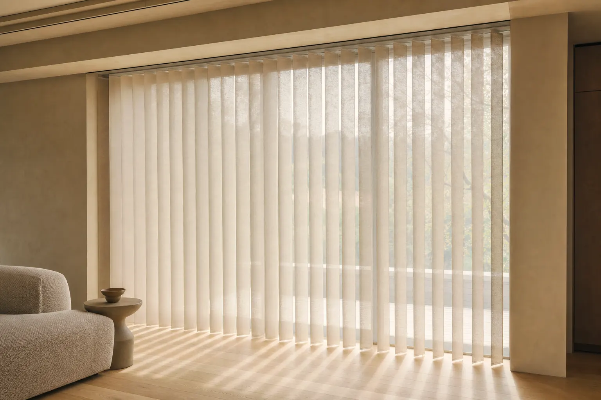
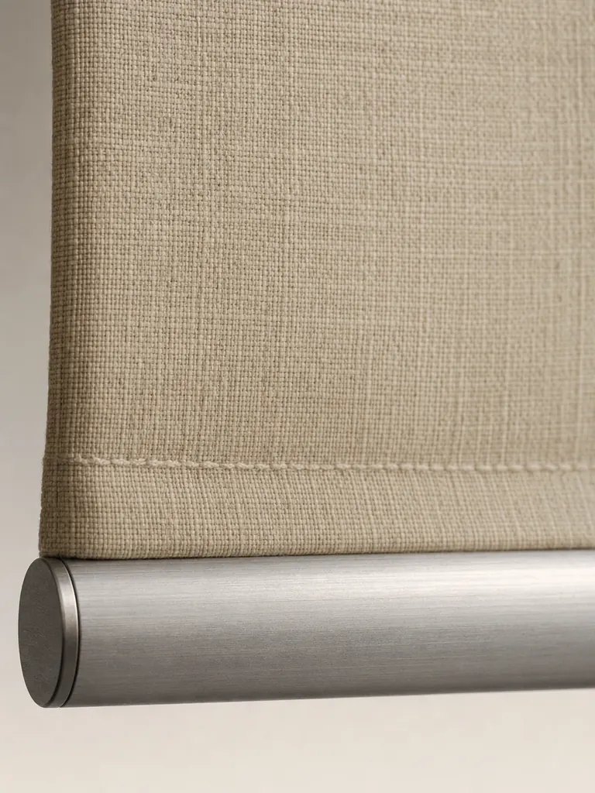

Product family
DualDrape™
Vertical fabric vanes between sheer panels, sized for patio doors and wide walls of glass. Rotate for light, draw to one side to walk through.
Pricing is set by The Home Depot and depends on width, height, fabric and stack. Nothing is sold on this site.
How it works
A patio door treated like a window, not a wall.
A sheer and a drape on one track
Rotate the vanes and the opening goes from a sheer screen to a run of soft fabric panels. There is no second layer to install.
Patio door scale as standard
Up to 192" wide and 120" tall, stacking left, right or split at the centre so the handle stays reachable.
Vanes wash
Each vane unclips from the carrier, so the fabric that faces a sliding door and a dog can be cleaned rather than replaced.
Specifications
The numbers, not the adjectives.
Full published range, on the page, not behind a tab.
| Vane width | 3 1/2" |
|---|---|
| Width range | 36" to 192" |
| Height range | 36" to 120" |
| Stack | Left, right, split centre |
| Control | Cordless wand rotate and traverse |
| Vanes | Removable and washable |
| Headrail | Low-profile 2 3/4" track |
| Mount | Ceiling or wall mount |
| Opacity | Light filtering, room darkening |
| Warranty | Limited lifetime |
Sizes shown are the full manufacturing range. Not every fabric is offered at every size, and pricing is set by The Home Depot.
Materials
Eight of the range, shown flat.
A screen cannot show openness or hand. Order the swatch and tape it to the glass before you order the shade.
Materials · dualdrape™



Compare
Against the two it is usually weighed against.
| DualDrape™ | Vertical Blinds | Sheer Shades | |
|---|---|---|---|
| Blackout available | Partial | Partial | Partial |
| Keeps the view | Yes | Yes | Yes |
| Insulates | No | No | Partial |
| Humid rooms | No | Yes | No |
| Spans over 96" | Yes | Yes | No |
| Motorized | No | No | Yes |
Partial means the effect is real but not complete: a closed slat or vane still passes some light at the edges. Blackout is only claimed where a fabric and a seal deliver it.
Child & pet safety
No cord in reach.
Cordless lift is standard on this line, not a paid upgrade. Corded window coverings remain a strangulation hazard for young children, which is why the cordless option is the default here and not an option you have to find.
Guidance published by the U.S. Consumer Product Safety Commission recommends cordless window coverings in any home with young children.

FAQ
Asked often, answered plainly.
If the answer you need is not here, the full list covers every line.
Will DualDrape™ work on a French door?
On a wide French opening, yes, with a ceiling mount and a split stack. On a single hinged door, a shade mounted to the door itself is usually better.
How far does the stack project?
Roughly 6" to 14" depending on width. Plan for the stack next to the jamb, not over the glass.
Can I wash the vanes at home?
Yes. Unclip a vane, hand wash cool, hang to dry flat, and re-clip. Do not machine dry.
Is there a cord anywhere on this product?
No. Rotation and traverse are both handled by a rigid wand.
Where you buy it
Sold at The Home Depot, built by us.
Veneta is stocked and sold exclusively through The Home Depot. You order there; the shade is cut to your measurements here.
Configure size, opacity and lift on Home Depot. Veneta helps you decide before you buy.
- 1
Configure the window
Enter your measurements, fabric and lift option on the Home Depot product page. Every size in our published range is orderable there.
- 2
Home Depot takes the order
Payment, delivery and returns are handled by The Home Depot under their policies. Nothing is sold on this site.
- 3
We build it to your numbers
The order comes to our plant, is cut to your measurements and ships to your address, typically inside two weeks.
Guides
Read this before you measure.
Measuring
How to measure a window
Inside or outside mount, three-point measuring, and the deduction you must not make.
Read the guideChoosing
Light filtering, room darkening or blackout
The three opacity names mean three specific things. This is which one your room needs.
Read the guideInstalling
How to install brackets and a headrail
Bracket spacing, depth and the order of operations, in six steps.
Read the guide